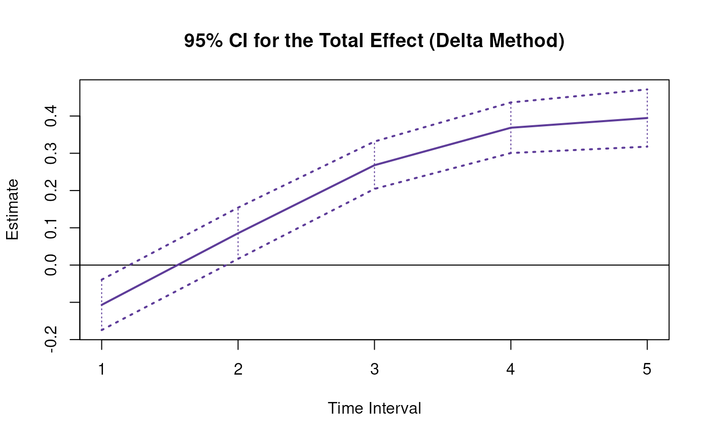
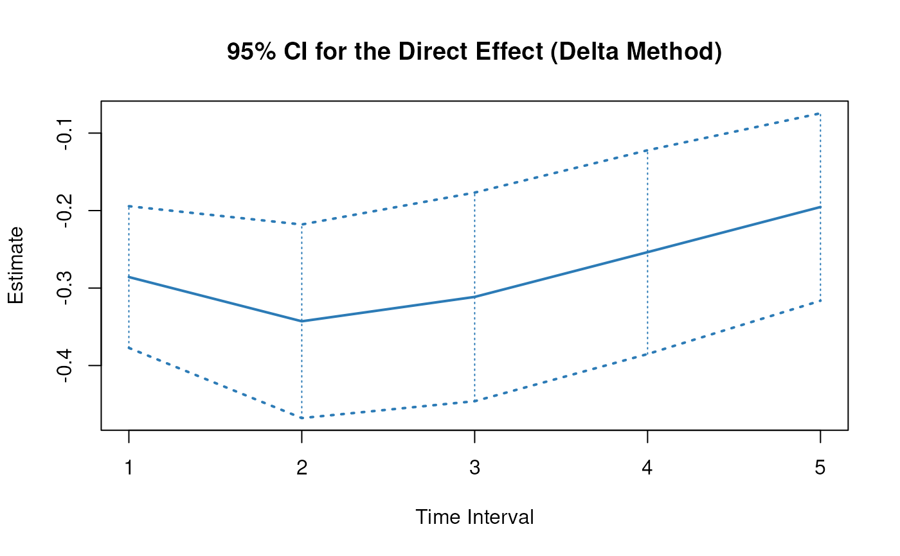
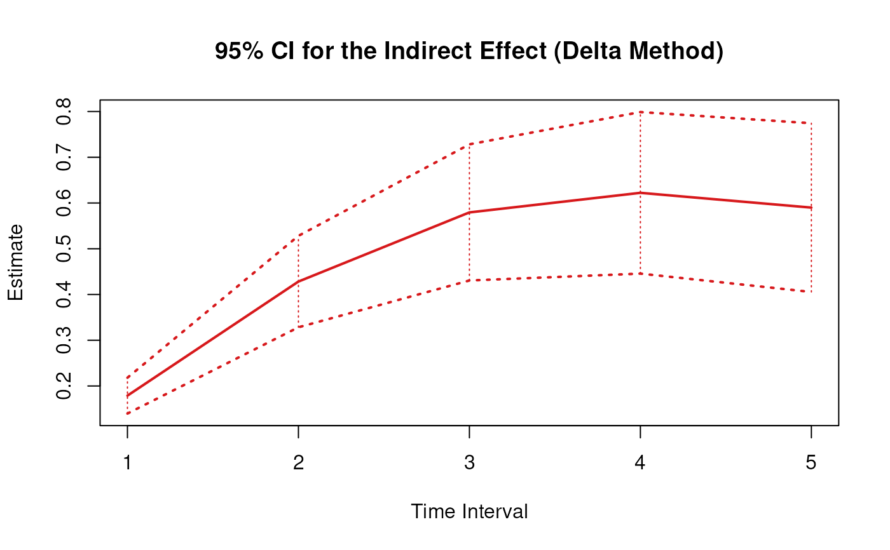
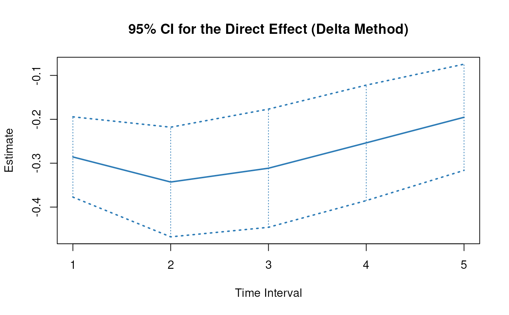
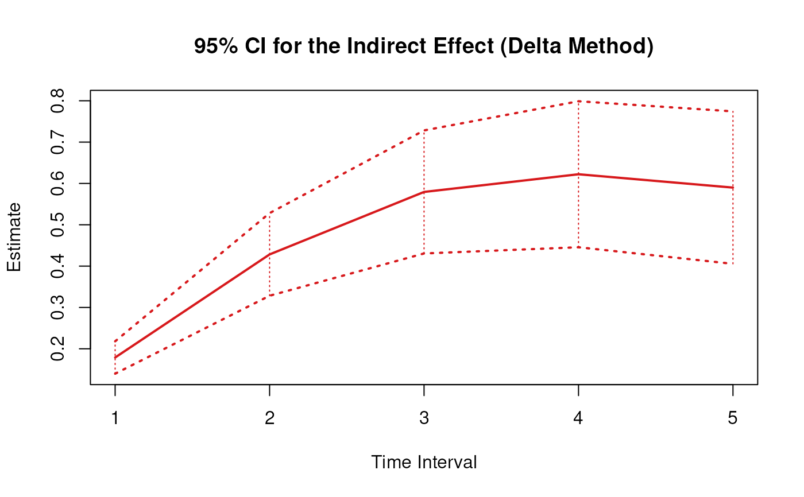

Delta Method Sampling Variance-Covariance Matrix for the Standardized Total, Direct, and Indirect Effects of X on Y Through M Over a Specific Time Interval or a Range of Time Intervals
Source:R/cTMed-delta-med-std.R
DeltaMedStd.RdThis function computes the delta method sampling variance-covariance matrix for the standardized total, direct, and indirect effects of the independent variable \(X\) on the dependent variable \(Y\) through mediator variables \(\mathbf{m}\) over a specific time interval \(\Delta t\) or a range of time intervals using the first-order stochastic differential equation model's drift matrix \(\boldsymbol{\Phi}\) and process noise covariance matrix \(\boldsymbol{\Sigma}\).
Arguments
- phi
Numeric matrix. The drift matrix (\(\boldsymbol{\Phi}\)).
phishould have row and column names pertaining to the variables in the system.- sigma
Numeric matrix. The process noise covariance matrix (\(\boldsymbol{\Sigma}\)).
- vcov_theta
Numeric matrix. The sampling variance-covariance matrix of \(\mathrm{vec} \left( \boldsymbol{\Phi} \right)\) and \(\mathrm{vech} \left( \boldsymbol{\Sigma} \right)\)
- delta_t
Numeric. Time interval (\(\Delta t\)).
- from
Character string. Name of the independent variable \(X\) in
phi.- to
Character string. Name of the dependent variable \(Y\) in
phi.- med
Character vector. Name/s of the mediator variable/s in
phi.- ncores
Positive integer. Number of cores to use. If
ncores = NULL, use a single core. Consider using multiple cores when number of replicationsRis a large value.- tol
Numeric. Smallest possible time interval to allow.
Value
Returns an object
of class ctmeddelta which is a list with the following elements:
- call
Function call.
- args
Function arguments.
- fun
Function used ("DeltaMedStd").
- output
A list the length of which is equal to the length of
delta_t.
Each element in the output list has the following elements:
- delta_t
Time interval.
- jacobian
Jacobian matrix.
- est
Estimated total, direct, and indirect effects.
- vcov
Sampling variance-covariance matrix of the estimated total, direct, and indirect effects.
Details
See TotalStd(),
DirectStd(), and
IndirectStd() for more details.
Delta Method
Let \(\boldsymbol{\theta}\) be a vector that combines \(\mathrm{vec} \left( \boldsymbol{\Phi} \right)\), that is, the elements of the \(\boldsymbol{\Phi}\) matrix in vector form sorted column-wise and \(\mathrm{vech} \left( \boldsymbol{\Sigma} \right)\), that is, the unique elements of the \(\boldsymbol{\Sigma}\) matrix in vector form sorted column-wise. Let \(\hat{\boldsymbol{\theta}}\) be a vector that combines \(\mathrm{vec} \left( \hat{\boldsymbol{\Phi}} \right)\) and \(\mathrm{vech} \left( \hat{\boldsymbol{\Sigma}} \right)\). By the multivariate central limit theory, the function \(\mathbf{g}\) using \(\hat{\boldsymbol{\theta}}\) as input can be expressed as:
$$ \sqrt{n} \left( \mathbf{g} \left( \hat{\boldsymbol{\theta}} \right) - \mathbf{g} \left( \boldsymbol{\theta} \right) \right) \xrightarrow[]{ \mathrm{D} } \mathcal{N} \left( 0, \mathbf{J} \boldsymbol{\Gamma} \mathbf{J}^{\prime} \right) $$
where \(\mathbf{J}\) is the matrix of first-order derivatives of the function \(\mathbf{g}\) with respect to the elements of \(\boldsymbol{\theta}\) and \(\boldsymbol{\Gamma}\) is the asymptotic variance-covariance matrix of \(\hat{\boldsymbol{\theta}}\).
From the former, we can derive the distribution of \(\mathbf{g} \left( \hat{\boldsymbol{\theta}} \right)\) as follows:
$$ \mathbf{g} \left( \hat{\boldsymbol{\theta}} \right) \approx \mathcal{N} \left( \mathbf{g} \left( \boldsymbol{\theta} \right) , n^{-1} \mathbf{J} \boldsymbol{\Gamma} \mathbf{J}^{\prime} \right) $$
The uncertainty associated with the estimator \(\mathbf{g} \left( \hat{\boldsymbol{\theta}} \right)\) is, therefore, given by \(n^{-1} \mathbf{J} \boldsymbol{\Gamma} \mathbf{J}^{\prime}\) . When \(\boldsymbol{\Gamma}\) is unknown, by substitution, we can use the estimated sampling variance-covariance matrix of \(\hat{\boldsymbol{\theta}}\), that is, \(\hat{\mathbb{V}} \left( \hat{\boldsymbol{\theta}} \right)\) for \(n^{-1} \boldsymbol{\Gamma}\). Therefore, the sampling variance-covariance matrix of \(\mathbf{g} \left( \hat{\boldsymbol{\theta}} \right)\) is given by
$$ \mathbf{g} \left( \hat{\boldsymbol{\theta}} \right) \approx \mathcal{N} \left( \mathbf{g} \left( \boldsymbol{\theta} \right) , \mathbf{J} \hat{\mathbb{V}} \left( \hat{\boldsymbol{\theta}} \right) \mathbf{J}^{\prime} \right) . $$
References
Bollen, K. A. (1987). Total, direct, and indirect effects in structural equation models. Sociological Methodology, 17, 37. doi:10.2307/271028
Deboeck, P. R., & Preacher, K. J. (2015). No need to be discrete: A method for continuous time mediation analysis. Structural Equation Modeling: A Multidisciplinary Journal, 23 (1), 61–75. doi:10.1080/10705511.2014.973960
Ryan, O., & Hamaker, E. L. (2021). Time to intervene: A continuous-time approach to network analysis and centrality. Psychometrika, 87 (1), 214–252. doi:10.1007/s11336-021-09767-0
See also
Other Continuous Time Mediation Functions:
DeltaBeta(),
DeltaBetaStd(),
DeltaIndirectCentral(),
DeltaMed(),
DeltaTotalCentral(),
Direct(),
DirectStd(),
ExpCov(),
ExpMean(),
Indirect(),
IndirectCentral(),
IndirectStd(),
MCBeta(),
MCBetaStd(),
MCIndirectCentral(),
MCMed(),
MCMedStd(),
MCPhi(),
MCTotalCentral(),
Med(),
MedStd(),
PosteriorBeta(),
PosteriorIndirectCentral(),
PosteriorMed(),
PosteriorPhi(),
PosteriorTotalCentral(),
Total(),
TotalCentral(),
TotalStd(),
Trajectory()
Examples
phi <- matrix(
data = c(
-0.357, 0.771, -0.450,
0.0, -0.511, 0.729,
0, 0, -0.693
),
nrow = 3
)
colnames(phi) <- rownames(phi) <- c("x", "m", "y")
sigma <- matrix(
data = c(
0.24455556, 0.02201587, -0.05004762,
0.02201587, 0.07067800, 0.01539456,
-0.05004762, 0.01539456, 0.07553061
),
nrow = 3
)
vcov_theta <- matrix(
data = c(
0.00843, 0.00040, -0.00151, -0.00600, -0.00033,
0.00110, 0.00324, 0.00020, -0.00061, -0.00115,
0.00011, 0.00015, 0.00001, -0.00002, -0.00001,
0.00040, 0.00374, 0.00016, -0.00022, -0.00273,
-0.00016, 0.00009, 0.00150, 0.00012, -0.00010,
-0.00026, 0.00002, 0.00012, 0.00004, -0.00001,
-0.00151, 0.00016, 0.00389, 0.00103, -0.00007,
-0.00283, -0.00050, 0.00000, 0.00156, 0.00021,
-0.00005, -0.00031, 0.00001, 0.00007, 0.00006,
-0.00600, -0.00022, 0.00103, 0.00644, 0.00031,
-0.00119, -0.00374, -0.00021, 0.00070, 0.00064,
-0.00015, -0.00005, 0.00000, 0.00003, -0.00001,
-0.00033, -0.00273, -0.00007, 0.00031, 0.00287,
0.00013, -0.00014, -0.00170, -0.00012, 0.00006,
0.00014, -0.00001, -0.00015, 0.00000, 0.00001,
0.00110, -0.00016, -0.00283, -0.00119, 0.00013,
0.00297, 0.00063, -0.00004, -0.00177, -0.00013,
0.00005, 0.00017, -0.00002, -0.00008, 0.00001,
0.00324, 0.00009, -0.00050, -0.00374, -0.00014,
0.00063, 0.00495, 0.00024, -0.00093, -0.00020,
0.00006, -0.00010, 0.00000, -0.00001, 0.00004,
0.00020, 0.00150, 0.00000, -0.00021, -0.00170,
-0.00004, 0.00024, 0.00214, 0.00012, -0.00002,
-0.00004, 0.00000, 0.00006, -0.00005, -0.00001,
-0.00061, 0.00012, 0.00156, 0.00070, -0.00012,
-0.00177, -0.00093, 0.00012, 0.00223, 0.00004,
-0.00002, -0.00003, 0.00001, 0.00003, -0.00013,
-0.00115, -0.00010, 0.00021, 0.00064, 0.00006,
-0.00013, -0.00020, -0.00002, 0.00004, 0.00057,
0.00001, -0.00009, 0.00000, 0.00000, 0.00001,
0.00011, -0.00026, -0.00005, -0.00015, 0.00014,
0.00005, 0.00006, -0.00004, -0.00002, 0.00001,
0.00012, 0.00001, 0.00000, -0.00002, 0.00000,
0.00015, 0.00002, -0.00031, -0.00005, -0.00001,
0.00017, -0.00010, 0.00000, -0.00003, -0.00009,
0.00001, 0.00014, 0.00000, 0.00000, -0.00005,
0.00001, 0.00012, 0.00001, 0.00000, -0.00015,
-0.00002, 0.00000, 0.00006, 0.00001, 0.00000,
0.00000, 0.00000, 0.00010, 0.00001, 0.00000,
-0.00002, 0.00004, 0.00007, 0.00003, 0.00000,
-0.00008, -0.00001, -0.00005, 0.00003, 0.00000,
-0.00002, 0.00000, 0.00001, 0.00005, 0.00001,
-0.00001, -0.00001, 0.00006, -0.00001, 0.00001,
0.00001, 0.00004, -0.00001, -0.00013, 0.00001,
0.00000, -0.00005, 0.00000, 0.00001, 0.00012
),
nrow = 15
)
# Specific time interval ----------------------------------------------------
DeltaMedStd(
phi = phi,
sigma = sigma,
vcov_theta = vcov_theta,
delta_t = 1,
from = "x",
to = "y",
med = "m"
)
#>
#> Total, Direct, and Indirect Effects
#>
#> $`1`
#> interval est se z p 2.5% 97.5%
#> total 1 -0.0936 0.0284 -3.2966 0.001 -0.1493 -0.0380
#> direct 1 -0.2503 0.0403 -6.2072 0.000 -0.3293 -0.1713
#> indirect 1 0.1567 0.0214 7.3215 0.000 0.1147 0.1986
#>
# Range of time intervals ---------------------------------------------------
delta <- DeltaMedStd(
phi = phi,
sigma = sigma,
vcov_theta = vcov_theta,
delta_t = 1:5,
from = "x",
to = "y",
med = "m"
)
plot(delta)


 # Methods -------------------------------------------------------------------
# DeltaMedStd has a number of methods including
# print, summary, confint, and plot
print(delta)
#>
#> Total, Direct, and Indirect Effects
#>
#> $`1`
#> interval est se z p 2.5% 97.5%
#> total 1 -0.0936 0.0284 -3.2966 0.001 -0.1493 -0.0380
#> direct 1 -0.2503 0.0403 -6.2072 0.000 -0.3293 -0.1713
#> indirect 1 0.1567 0.0214 7.3215 0.000 0.1147 0.1986
#>
#> $`2`
#> interval est se z p 2.5% 97.5%
#> total 2 0.0748 0.0341 2.1936 0.0283 0.0080 0.1416
#> direct 2 -0.3003 0.0553 -5.4340 0.0000 -0.4086 -0.1920
#> indirect 2 0.3751 0.0549 6.8283 0.0000 0.2674 0.4828
#>
#> $`3`
#> interval est se z p 2.5% 97.5%
#> total 3 0.2347 0.0434 5.4129 0 0.1497 0.3197
#> direct 3 -0.2728 0.0596 -4.5782 0 -0.3895 -0.1560
#> indirect 3 0.5075 0.0813 6.2407 0 0.3481 0.6669
#>
#> $`4`
#> interval est se z p 2.5% 97.5%
#> total 4 0.3228 0.0526 6.1421 0e+00 0.2198 0.4258
#> direct 4 -0.2222 0.0582 -3.8205 1e-04 -0.3361 -0.1082
#> indirect 4 0.5450 0.0957 5.6944 0e+00 0.3574 0.7325
#>
#> $`5`
#> interval est se z p 2.5% 97.5%
#> total 5 0.3456 0.0578 5.9813 0.0000 0.2323 0.4588
#> direct 5 -0.1711 0.0534 -3.2018 0.0014 -0.2759 -0.0664
#> indirect 5 0.5167 0.0991 5.2128 0.0000 0.3224 0.7110
#>
summary(delta)
#> effect interval est se z p 2.5%
#> 1 total 1 -0.09362266 0.02839956 -3.296624 9.785454e-04 -0.149284778
#> 2 direct 1 -0.25030140 0.04032409 -6.207242 5.392257e-10 -0.329335165
#> 3 indirect 1 0.15667873 0.02139990 7.321469 2.452705e-13 0.114735694
#> 4 total 2 0.07477656 0.03408921 2.193555 2.826742e-02 0.007962932
#> 5 direct 2 -0.30032315 0.05526693 -5.434048 5.508981e-08 -0.408644350
#> 6 indirect 2 0.37509972 0.05493323 6.828285 8.593600e-12 0.267432566
#> 7 total 3 0.23472850 0.04336496 5.412861 6.202580e-08 0.149734736
#> 8 direct 3 -0.27275165 0.05957594 -4.578218 4.689527e-06 -0.389518344
#> 9 indirect 3 0.50748016 0.08131758 6.240719 4.355637e-10 0.348100637
#> 10 total 4 0.32280682 0.05255619 6.142127 8.142363e-10 0.219798571
#> 11 direct 4 -0.22216560 0.05815057 -3.820523 1.331688e-04 -0.336138613
#> 12 indirect 4 0.54497241 0.09570351 5.694382 1.238193e-08 0.357396972
#> 13 total 5 0.34557261 0.05777557 5.981293 2.213737e-09 0.232334570
#> 14 direct 5 -0.17111843 0.05344454 -3.201794 1.365746e-03 -0.275867809
#> 15 indirect 5 0.51669104 0.09911975 5.212796 1.860156e-07 0.322419893
#> 97.5%
#> 1 -0.03796055
#> 2 -0.17126763
#> 3 0.19862177
#> 4 0.14159019
#> 5 -0.19200196
#> 6 0.48276686
#> 7 0.31972227
#> 8 -0.15598496
#> 9 0.66685968
#> 10 0.42581506
#> 11 -0.10819258
#> 12 0.73254786
#> 13 0.45881066
#> 14 -0.06636904
#> 15 0.71096219
confint(delta, level = 0.95)
#> effect interval 2.5 % 97.5 %
#> 1 total 1 -0.149284778 -0.03796055
#> 2 direct 1 -0.329335165 -0.17126763
#> 3 indirect 1 0.114735694 0.19862177
#> 4 total 2 0.007962932 0.14159019
#> 5 direct 2 -0.408644350 -0.19200196
#> 6 indirect 2 0.267432566 0.48276686
#> 7 total 3 0.149734736 0.31972227
#> 8 direct 3 -0.389518344 -0.15598496
#> 9 indirect 3 0.348100637 0.66685968
#> 10 total 4 0.219798571 0.42581506
#> 11 direct 4 -0.336138613 -0.10819258
#> 12 indirect 4 0.357396972 0.73254786
#> 13 total 5 0.232334570 0.45881066
#> 14 direct 5 -0.275867809 -0.06636904
#> 15 indirect 5 0.322419893 0.71096219
plot(delta)
# Methods -------------------------------------------------------------------
# DeltaMedStd has a number of methods including
# print, summary, confint, and plot
print(delta)
#>
#> Total, Direct, and Indirect Effects
#>
#> $`1`
#> interval est se z p 2.5% 97.5%
#> total 1 -0.0936 0.0284 -3.2966 0.001 -0.1493 -0.0380
#> direct 1 -0.2503 0.0403 -6.2072 0.000 -0.3293 -0.1713
#> indirect 1 0.1567 0.0214 7.3215 0.000 0.1147 0.1986
#>
#> $`2`
#> interval est se z p 2.5% 97.5%
#> total 2 0.0748 0.0341 2.1936 0.0283 0.0080 0.1416
#> direct 2 -0.3003 0.0553 -5.4340 0.0000 -0.4086 -0.1920
#> indirect 2 0.3751 0.0549 6.8283 0.0000 0.2674 0.4828
#>
#> $`3`
#> interval est se z p 2.5% 97.5%
#> total 3 0.2347 0.0434 5.4129 0 0.1497 0.3197
#> direct 3 -0.2728 0.0596 -4.5782 0 -0.3895 -0.1560
#> indirect 3 0.5075 0.0813 6.2407 0 0.3481 0.6669
#>
#> $`4`
#> interval est se z p 2.5% 97.5%
#> total 4 0.3228 0.0526 6.1421 0e+00 0.2198 0.4258
#> direct 4 -0.2222 0.0582 -3.8205 1e-04 -0.3361 -0.1082
#> indirect 4 0.5450 0.0957 5.6944 0e+00 0.3574 0.7325
#>
#> $`5`
#> interval est se z p 2.5% 97.5%
#> total 5 0.3456 0.0578 5.9813 0.0000 0.2323 0.4588
#> direct 5 -0.1711 0.0534 -3.2018 0.0014 -0.2759 -0.0664
#> indirect 5 0.5167 0.0991 5.2128 0.0000 0.3224 0.7110
#>
summary(delta)
#> effect interval est se z p 2.5%
#> 1 total 1 -0.09362266 0.02839956 -3.296624 9.785454e-04 -0.149284778
#> 2 direct 1 -0.25030140 0.04032409 -6.207242 5.392257e-10 -0.329335165
#> 3 indirect 1 0.15667873 0.02139990 7.321469 2.452705e-13 0.114735694
#> 4 total 2 0.07477656 0.03408921 2.193555 2.826742e-02 0.007962932
#> 5 direct 2 -0.30032315 0.05526693 -5.434048 5.508981e-08 -0.408644350
#> 6 indirect 2 0.37509972 0.05493323 6.828285 8.593600e-12 0.267432566
#> 7 total 3 0.23472850 0.04336496 5.412861 6.202580e-08 0.149734736
#> 8 direct 3 -0.27275165 0.05957594 -4.578218 4.689527e-06 -0.389518344
#> 9 indirect 3 0.50748016 0.08131758 6.240719 4.355637e-10 0.348100637
#> 10 total 4 0.32280682 0.05255619 6.142127 8.142363e-10 0.219798571
#> 11 direct 4 -0.22216560 0.05815057 -3.820523 1.331688e-04 -0.336138613
#> 12 indirect 4 0.54497241 0.09570351 5.694382 1.238193e-08 0.357396972
#> 13 total 5 0.34557261 0.05777557 5.981293 2.213737e-09 0.232334570
#> 14 direct 5 -0.17111843 0.05344454 -3.201794 1.365746e-03 -0.275867809
#> 15 indirect 5 0.51669104 0.09911975 5.212796 1.860156e-07 0.322419893
#> 97.5%
#> 1 -0.03796055
#> 2 -0.17126763
#> 3 0.19862177
#> 4 0.14159019
#> 5 -0.19200196
#> 6 0.48276686
#> 7 0.31972227
#> 8 -0.15598496
#> 9 0.66685968
#> 10 0.42581506
#> 11 -0.10819258
#> 12 0.73254786
#> 13 0.45881066
#> 14 -0.06636904
#> 15 0.71096219
confint(delta, level = 0.95)
#> effect interval 2.5 % 97.5 %
#> 1 total 1 -0.149284778 -0.03796055
#> 2 direct 1 -0.329335165 -0.17126763
#> 3 indirect 1 0.114735694 0.19862177
#> 4 total 2 0.007962932 0.14159019
#> 5 direct 2 -0.408644350 -0.19200196
#> 6 indirect 2 0.267432566 0.48276686
#> 7 total 3 0.149734736 0.31972227
#> 8 direct 3 -0.389518344 -0.15598496
#> 9 indirect 3 0.348100637 0.66685968
#> 10 total 4 0.219798571 0.42581506
#> 11 direct 4 -0.336138613 -0.10819258
#> 12 indirect 4 0.357396972 0.73254786
#> 13 total 5 0.232334570 0.45881066
#> 14 direct 5 -0.275867809 -0.06636904
#> 15 indirect 5 0.322419893 0.71096219
plot(delta)
 


